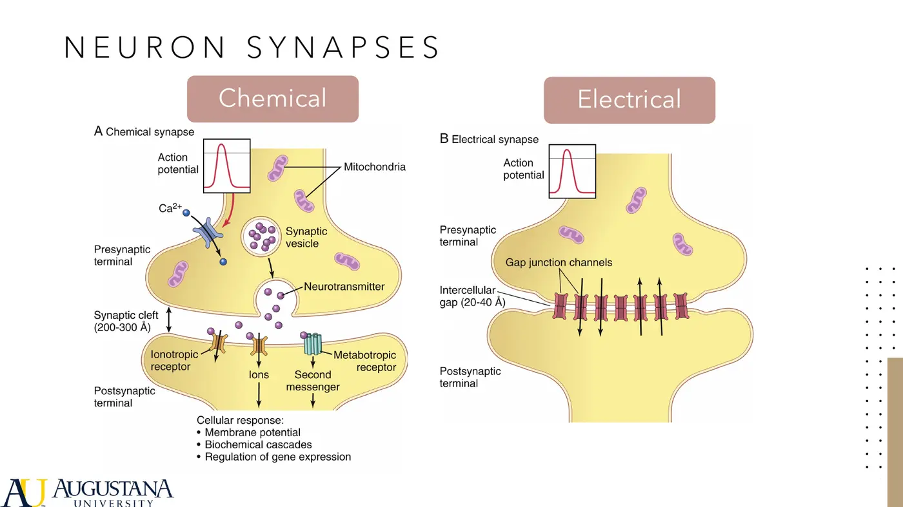
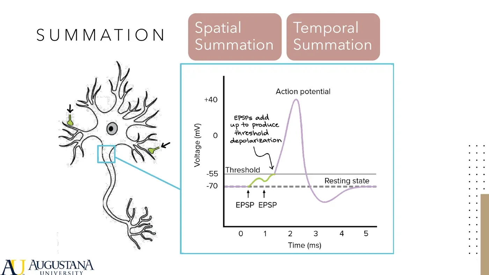
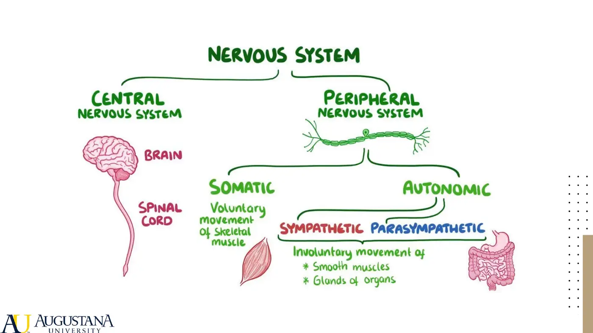
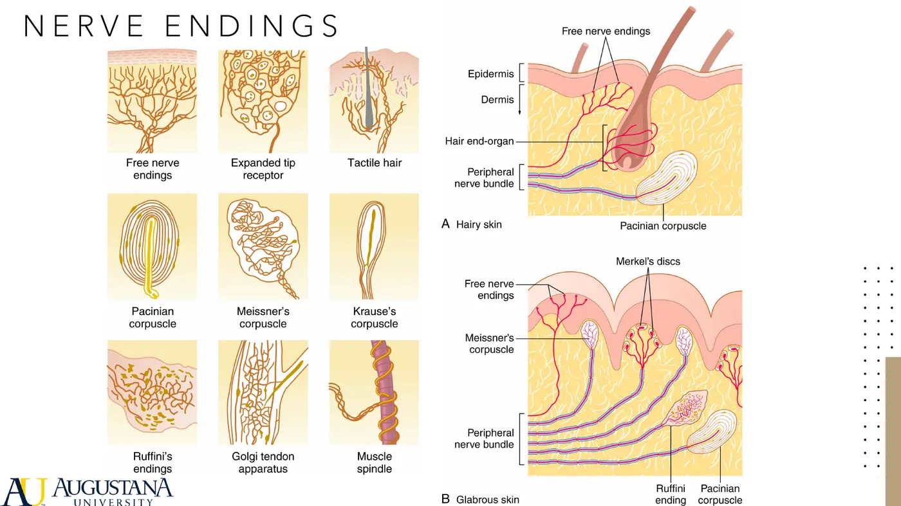
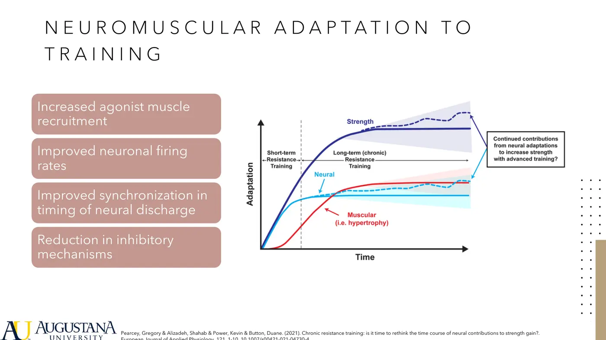
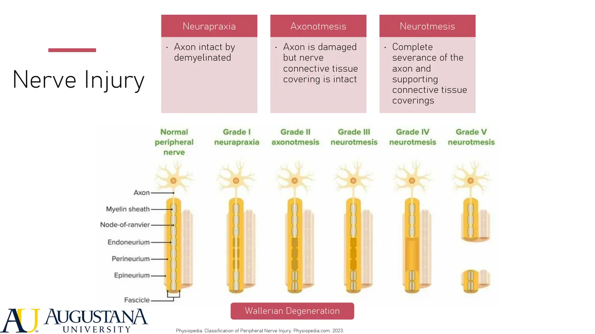
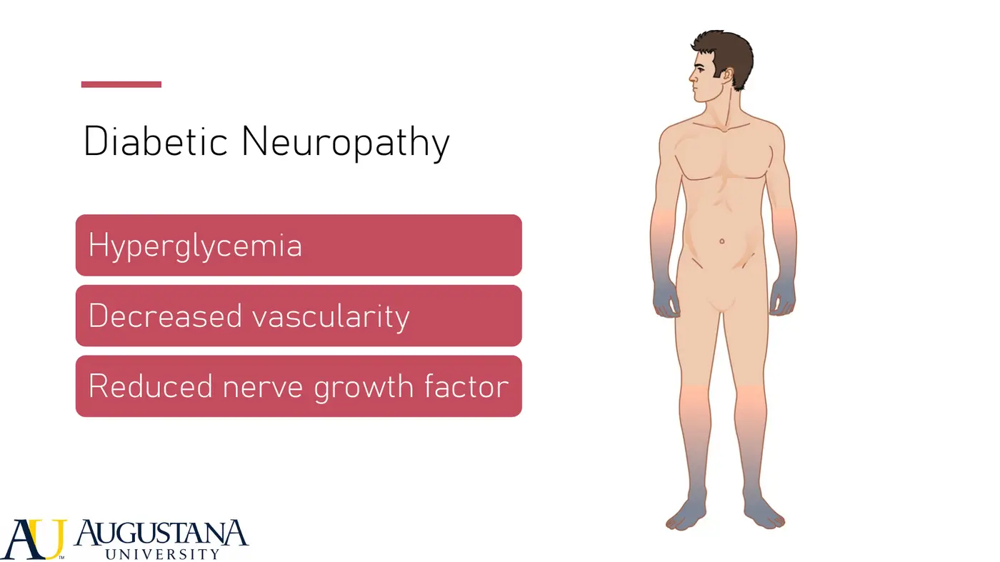
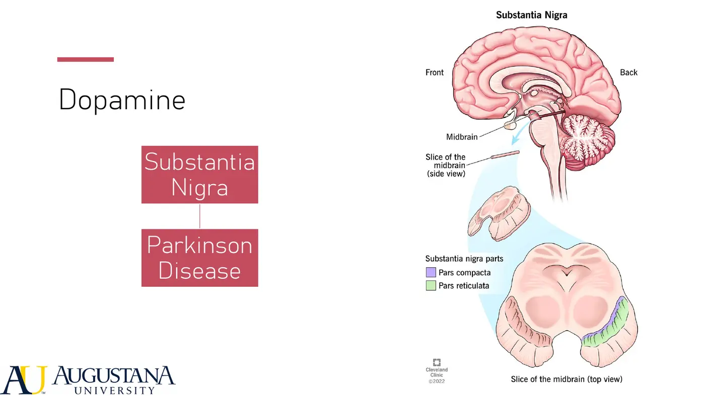
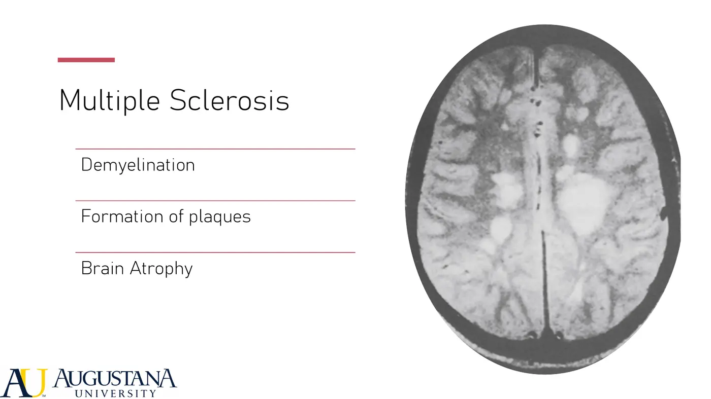
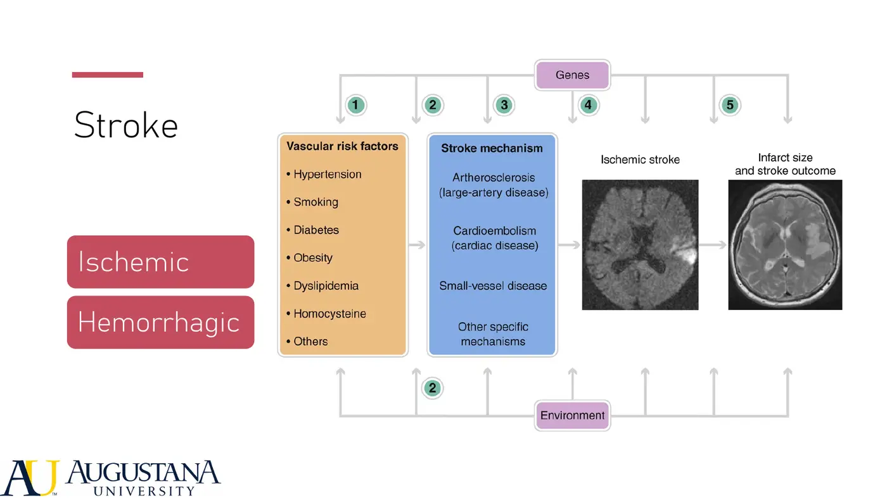

Human Physiology · 6131
Module 5 — The Neuromuscular System
Topics: 5.1 Structure & Function of Nerves and the Nervous System • 5.2 Nervous System Motor Control • 5.3 Neuromuscular Pathophysiology & Aging • Sync: three case scenarios
📖 How to Use These Notes
- Best used with the lecture playing — keep these open, follow along, and add your own notes as you watch
- Lecture banners mark the start of each topic and run in the same order as the videos
- 🎙 Callouts = direct insights from the instructor's transcript
- ★ Tips = exam-relevant content or things the instructor told you to prepare
- Figures are taken directly from the module's slide decks
- Each topic ends with its own Quick-Reference Glossary
- Written from last year's recordings — if a lecture has been re-recorded or resequenced, Canvas wins
- Lectures by Dr. Evan Andreyo (PT, DPT — board-certified orthopaedic + sports specialist); watch in your own Canvas module
- Required videos: Osmosis "Neuron Action Potential — Physiology" (linked in Topic 5.1 below) + Khan Academy (Peripheral Somatosensation, Motor Unit, Muscle Stretch Reflex, Autonomic NS) — on the Canvas topic pages
- Guyton & Hall 14e Ch 5, 46–49 (listed pages), 55, 61; Damjanov Pathology Ch 20–21 — keep them beside these notes
- Next week is lab immersion — this module closes mini-mester content, and the Neuromuscular Case Study rides on it
TOPIC 5.1
Nervous System Physiology — Synapses to Dermatomes
Dr. Andreyo's opener: the nervous system is king (or queen — "the queen is way cooler in chess anyways"). Muscle doesn't work without it, organs don't work without it — there is no "I'm an ortho PT, I don't do neuro."
1. The Synapse

- Presynaptic axon terminal → postsynaptic dendrite. Chemical (dominant): Ca²⁺ influx through presynaptic calcium channels signals vesicles to release neurotransmitters across the cleft. Electrical: gap junctions transmit straight across — faster and more efficient, but rarer. Of the 50+ neurotransmitters, anchor on acetylcholine, norepinephrine/epinephrine, histamine, serotonin, glutamate. They land via gated ion channels (depolarizing cascade) or second-messenger receptors (cascade without entry).
| Direction | Mechanism | Effect |
|---|---|---|
| Excitation | Neurotransmitter promotes Na⁺ influx (positive charge in) | Membrane climbs toward threshold — "keep the party going" |
| Inhibition | Cl⁻ influx or K⁺ efflux (more negative inside) | Cell calmed — useful when you WANT less activity (relaxing overactive muscle) |
📺 Required watching — the action potential

- Resting potential ≈ −65 to −70 mV. One terminal's EPSP nudges ~0.5–1 mV; threshold needs a 10–20 mV swing — so potentials must summate: spatial (many synapses at once; channels linger open a few ms, sensitizing the next hit) or temporal (one persistent input firing again and again; a 1–2 ms self-shutoff keeps signals moving forward, not backward).
2. Organization + Development

- Development: the neural tube forms within the first weeks (its tip just ~3 mm) and closes to become brain + cord — incomplete closure = spina bifida. In utero the nervous system adds ~250,000 nerve cells a minute; at birth: billions of neurons, trillions of connections.
| Sympathetic — fight or flight | Parasympathetic — rest and digest |
|---|---|
| Origin T1–L2, intermediolateral horn → ventral root → white ramus → sympathetic chain (headquarters; ganglia = satellite shipping centers) → gray ramus/spinal nerve, chain up/down, or peripheral ganglia | CN 3, 7, 9, 10 + S2–4; ~75% of it is the VAGUS (heart, lungs, stomach, intestines, liver, gallbladder, pancreas, kidneys, ureters) |
| ↑HR, vasoconstricts the non-essentials (gut), rapid eye movements, piloerection — the chills making your hair stand up | No chain — postganglionic neurons sit IN the organ walls. ↓HR, digestion back on |
3. Sensory System
| Receptor class | Detects |
|---|---|
| Mechanoreceptors | Pressure, touch, tactile sensation |
| Thermoreceptors | Temperature |
| Nociceptors | Pain |
| Electromagnetic receptors | Light (retina) |
| Chemoreceptors | Taste, smell, ion concentrations |
- Conduction velocity rides on myelination (saltatory conduction — the "electrical tape on the wire") and diameter (bigger = faster). Spindles + Golgi tendon organs report FAST (reflex-hammer fast); aching pain and crude touch crawl. Stimulus transduction is mostly deformation of the ending (or temperature/chemical change).

| Adaptation speed | Members | Why it makes sense |
|---|---|---|
| Slow-adapting | Muscle spindles, pain receptors, baroreceptors | Signal stays constant while the stimulus lasts — under a heavy lift or in real pain you want LIVE feedback, not a fading one |
| Rapidly-adapting | Pacinian corpuscles, hair receptors | First contact is loud, then it fades — the shirt on your back disappears from awareness |
4. Pain (the preview)
- Fast, sharp pain = large myelinated A-delta fibers (the nail, the first touch of the stove); slow, lingering pain = small/unmyelinated fibers (the throb after). Capsaicin fires the SAME pain/temperature receptors — hence the burn and the sweat. Endogenous analgesia: opiates you make yourself (endorphins, enkephalins), tactile inhibition (you rub the elbow you bumped — peripheral tactile input inhibits pain from the same area), electrical stimulation. Taxonomy for later: nociceptive · neuropathic · nociplastic (central sensitization) — fear, beliefs, pain duration, depression, and sleep all tune the experience. A whole pain course is coming.
5. Neuromuscular Adaptation to Training

- First ~1–2 weeks of a strength program: gains are neural — increased agonist recruitment, faster firing rates, better synchronization, reduced inhibitory mechanisms. Muscle size catches up around ~6 weeks; beyond that it's both. Neuroplasticity proper returns in Topic 5.3.
Topic 5.1 — Quick-Reference Glossary
| Term | Definition |
|---|---|
| Chemical vs electrical synapse | Vesicles + neurotransmitters vs gap junctions (fast, rare) |
| EPSP math | ~0.5–1 mV each; 10–20 mV to threshold; rest ≈ −65 to −70 mV |
| Spatial / temporal summation | Many synapses at once / one input repeating |
| Sympathetic addresses | T1–L2 + the sympathetic chain |
| Parasympathetic addresses | CN 3, 7, 9, 10 + S2–4; vagus ≈ 75% |
| Saltatory conduction | Myelin + big diameter = speed |
| Slow vs rapid adapting | Spindles/pain/baro stay loud · Pacinian/hair fade |
| Fast vs slow pain | A-delta sharp now · unmyelinated throb after |
| Early strength gains | Neural first (1–2 wk), hypertrophy ~6 wk |
TOPIC 5.2
Nervous System Motor Control (video + reading topic)
- This topic runs on two Khan Academy videos — Motor Unit (9:35) and Muscle Stretch Reflex (9:34) — plus Guyton Ch 55 pp 686–691 (muscle spindles + Golgi tendon organs in cord reflexes). The working vocabulary: a motor unit = one motor neuron + every fiber it innervates; the stretch reflex = spindle detects stretch → monosynaptic excitation of the stretched muscle + inhibition of the antagonist (your reflex hammer in physiology form); GTOs guard tension. Movement Science's motor-control constructs sit on exactly this machinery.
TOPIC 5.3
Neuromuscular Pathophysiology + Aging
1. Peripheral Nerves: Space, Blood, Movement
- Every peripheral nerve needs three things — space, blood, and the ability to move/glide. Pathology is what happens when one goes missing: compression, devascularization, or lost excursion. Insult menu for any neuron: immune attack, trauma, ischemia, neurotransmitter dysregulation, free radicals, metabolic compromise, external toxins → necrosis or apoptosis.

| Grade | What's damaged | Course |
|---|---|---|
| Neurapraxia | Myelin insulted (ischemia/compression); AXON INTACT | Conducts, but less efficiently — mild paresis/sensory change; regenerates |
| Axonotmesis | Axon + myelin damaged; connective sheaths (endo-/peri-/epineurium) intact | Prolonged compression, radiculopathy; real motor + sensory deficits; heals partially — sometimes not fully |
| Neurotmesis | Complete severance (gunshot, stab) | Total loss of function distally |
- Compression happens at every level of the chain: carpal tunnel (median n. at the wrist) → the same event higher up is a different entrapment → in the neck it's radiculopathy → at the plexus/first rib it's thoracic outlet. Whatever compresses, the deficit falls BELOW it. PT's job for compressive injuries: restore space, movement, and vascularity (nerve mobilizations, soft-tissue work).

2. CNS: When Transmission Fails
| Neurotransmitter | Dysfunction | Condition |
|---|---|---|
| Glutamate (main CNS excitatory; lets Ca²⁺ in via ligand-gated + metabotropic routes) | Excitotoxicity — excess glutamate floods cells with calcium and kills them | Stroke, brain injury, spinal cord injury, ALS |
| Acetylcholine (neuromuscular junction) | Decreased levels, or antibodies destroying nerve-muscle communication | Alzheimer's (↓ACh); myasthenia gravis (autoimmune; immunosuppressive treatment) |
| Dopamine (substantia nigra, basal ganglia) | Production falls → motor programming + initiation fail | Parkinson's disease → levodopa |
| Serotonin / GABA / substance P | Sleep regulation / seizure prevention (↓GABA → seizures) / pain regulation | Named for context — details later |

3. Glial Cells + Demyelination
- Microglia = the CNS's immune cells (cleanup crew). Macroglia: astrocytes ("connective tissue of the nervous system" — bind neuron↔neuron and neuron↔capillary), oligodendrocytes (CNS myelin), Schwann cells (PNS myelin), satellite cells. Multiple sclerosis = autoimmune attack on CNS myelin + oligodendrocytes → demyelination, plaque/scarring, cortical atrophy; progressive and person-variable; disease-modifying drugs reduce lesion development and atrophy.

4. Trauma + Infarction
- Brain injury mechanisms: direct impact, acceleration-deceleration (car crash), blast. Primary injury = the impact force itself. Secondary injury — usually the worse one — is the metabolic cascade: ischemia → glutamate excitotoxicity, hematoma, edema, blood-brain-barrier disruption → rising intracranial pressure → compression → neuronal death, worsening over days to weeks.

🧠 Ischemic vs hemorrhagic — why the distinction is life-or-death
- Ischemic = not enough blood (clot) → treat by BUSTING the clot
- Hemorrhagic = too much blood (burst vessel) → clot-busters/thinners would be catastrophic; management is surgical/other
- Risk factors for both are largely preventable — same lifestyle story as the cardiopulmonary modules
5. Aging + Neuroplasticity
- Aging ("we don't age like wine"): ↓motor + sensory fiber counts (↓vascularity), ↓synaptic transmission efficiency, ↓nociceptive input (older adults may not feel a wound happen), microglial inflammation that never fully switches off, accumulating free radicals → oxidative stress — correlated with Alzheimer's, Parkinson's, ALS. ALS itself = attack on motor neurons; multifactorial (excitotoxicity + oxidative damage + autoimmune components).
Topic 5.3 — Quick-Reference Glossary
| Term | Definition |
|---|---|
| Space · blood · movement | What every peripheral nerve needs — lose one, get pathology |
| Neurapraxia / axonotmesis / neurotmesis | Myelin only / axon too / complete severance |
| Wallerian degeneration | Anterograde die-back distal to axonal injury |
| Stocking-and-glove | Diabetic neuropathy's distal-first sensory pattern |
| Excitotoxicity | Glutamate + calcium overload kill neurons (stroke, TBI, SCI, ALS) |
| Myasthenia gravis | Autoimmune vs the neuromuscular junction (ACh) |
| Parkinson's | Substantia nigra stops making dopamine → initiation fails → levodopa |
| Oligodendrocyte vs Schwann | CNS vs PNS myelin — the MS case hinges on it |
| Primary vs secondary brain injury | Impact force vs the days-long metabolic cascade |
| Neuroplasticity trio | Regeneration · cortical remapping · substitution |
SYNC SESSION
Pair-and-Share + Three Cases
Warm-up (Action Potential slides): describe synaptic transmission and action-potential propagation out loud, then spatial vs temporal summation. Then three cases — worksheets are in this Drive folder.
| Case | Prompts | Where the answers live |
|---|---|---|
| 1 — 48F with multiple sclerosis | What MS is; role of demyelination, plaques, atrophy · CNS vs PNS myelination · long-term outcomes · PT's role | Topic 5.3 §3 — oligodendrocytes (CNS) vs Schwann cells (PNS) is the trap question |
| 2 — 78M, T2DM + peripheral neuropathy | Sensory receptor types + their nerve endings · mechanism + symptoms of diabetic neuropathy · daily-function impact · PT's role | Topic 5.1 §3 (receptor zoo) + 5.3 §1 — stocking-and-glove, wound risk, balance/falls |
| 3 — 35M, traumatic LEFT C7 root injury | Three injury grades + expected findings · C7 presentation (dermatome, myotome, reflex) · recovery potential · PT's role | Topic 5.3 §1 — grades + Wallerian; C7 classically: middle-finger dermatome, elbow-extension/wrist-flexion myotome, triceps reflex |